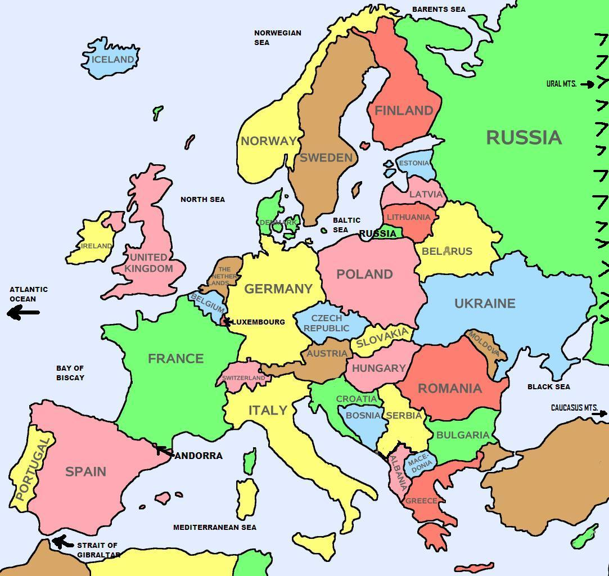

Best Advice

When travelling to Europe you want to avoid peak travel times as prices are higher and crowds are larger
Be mindful of Holidays especially during Easter and Christmas as there can be more crowded attractions and higher prices
Use Public transport
Stay Hydrated and Rested, there is lots of walking and it can be tiring. Carry reusable water bottles adn take breaks